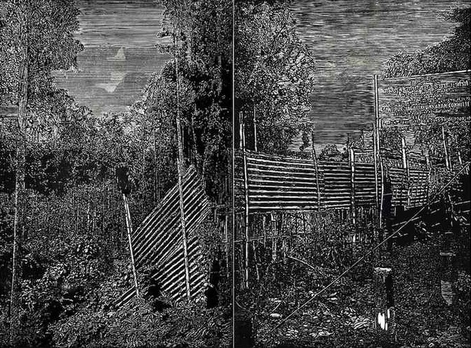

Image Credit - Latitude 28
Chandan Bez Baruah is an Assamese artist who excels in woodcuts and printmaking. He completed his BFA in Printmaking from Government Art College Guwahati, Assam, and MFA in Printmaking from Visva-Bharati University Santiniketan, West Bengal.
Today Baruah lives and works in Delhi-NCR but continues to dream about forests of the north-east. A childhood love and a memory of the landscapes of Assam, these forests help the artist to fly away from the hustle and bustle of the metropolis he has made his home. The dark and wooded trees provide him with a retreat at times of loneliness. These forests—Baruah's refuge—exist everywhere, permeating from varied geographies of history, culture, and contemporary conflict. He finds solace in creating images out of wooden boards because he feels that the wood of the boards demand revelation. And, the love he pours in to create these images highlights his intimacy to the trees, the undergrowth and, of course, the forests. It is in these images that Baruah holds our hand and takes up on a trek through the jungle and his specially chosen haunts, often asking us to just observe his secret treasures and wishes. His prints of the forests are views from the artist's eyes. They tell stories of the young man who accompanied Indian army men who needed a native pair of eyes for a guide. It is in these images that the artist records the chirping of the birds, the buzz of the bees and the croaking of the frogs. He appeals to our eyes as ears to see and hear—the falling of trees, for example—all the goings-on in the "silence" of the forests.
Baruah's forests—though they show old trees—reflect the postmodern approach to landscapes. He works on a series in what has been described as “a confined and comprehensive manner”. Speaking about an exhibit If A Tree Falls (Somewhere In Northeast India) he had stressed that one of the reasons for creating prints was "to see the insight terrain of the marginalised or the subaltern, and to situate Postmodern landscapes as encountering Romantic theory". For him, the woodcut prints that he creates, are his digital photographs. Carved with extreme precision and care, these woodcuts are born from the digital photographs that the artist has clicked for his reference. What is striking is the highly skilled hand-craftsmanship that goes into the creation of the prints since they depict a chaos in the serenity of the forests.
Unlike other printmakers, Baruah's forests do not have humans or wildlife. He remains a solitary observer much like what American photographer Ansel Adamas once commented when he was told there were no human beings in his photographs, “There are always two people: the photographer and the viewer.” Indeed, Chandan Bez Baruah’s monochromatic woodcuts have more than one human being, the viewer. There is a lot to seek and understand in the play of light on the trees: these forests have borne witness to history, culture, and contemporary conflict for centuries.